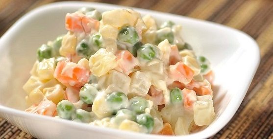

RECETAS FACILES DE COCINA
RECETAS
NOTICIAS


Espaguetti Bolognesa
Una receta sencilla para hacerla con los mas peques de la casa y que seguro que repetirás Leer más...

Ensaladilla
La receta mas facil de la web, además muy útil para tenerla siempre preparada para cuando no tenemos tiempo
Leer más...
Seitán con patatas
Una receta vegana para esos dias que tenemos ganas de comer algo delicioso y suculento, con todo el sabor del seitan y la cremosidad de la salsa de champiñones
Leer más...